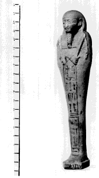

La Base Internationale des Shaouabtis (bis) est née à Paris, en juillet 1990, lors des rencontres `Informatique et Egyptologie' organisées par le Centre de Recherches égyptologiques de l'Université de Paris-Sorbonne. Chacun des deux auteurs y avait présenté ses travaux sur les figurines funéraires entrepris à l'aide de l'outil informatique. Il s'agit d'une part de la banque de données oushebti, application dérivée de la base pharaon du Musée du Louvre;1 du Répertoire Annuel des Figurines Funéraires,2 d'autre part. Chaque projet s'est développé dans un cadre différent, avec ses propres contraintes. La banque de données oushebtis, qui privilégie les informations archéologiques et muséologiques, devait impérativement être compatible avec les importants travaux menés par l'équipe des conservateurs du Département des antiquités égyptiennes du Louvre. Le Répertoire recense les références bibliographiques et se présente avant tout comme un index onomastique ou prosopographique. Ce n'est donc que dans un terme fort éloigné que ces deux bases auraient dû se recouper. Sans abandonner pour autant leurs deux projets, parce que déjà largement opérationnels, les auteurs décidèrent de conduire une réflexion commune pour tenter de définir une base commune spécifiquement consacrée au type particulier du matériel étudié, loin des contraintes imposées par les précédents projets: la Base Internationale des Shaouabtis (bis).3
Principes directeurs
Le maître mot de la Base Internationale des Shaouabtis est la réciprocité. Un canevas de saisie (logiciel et exemples) doit pouvoir être remis à tous les chercheurs qui souhaiteraient participer au projet. Une fois les fiches remplies selon les critères définis, le chercheur fait parvenir une copie de son fichier à l'un des trois centres internationaux de gestion de la base (Genève, Paris ou Utrecht) et les nouvelles fiches informatisées sont alors insérées dans la base commune. En retour, le chercheur reçoit régulièrement les mises à jour du fichier commun. A titre personnel, il peut utiliser librement les informations contenues dans la base commune et citer les références ou les données qu'il y trouverait, en mentionnant explicitement le nom de l'auteur et le numéro de la fiche d'où il tire ses renseignements, comme s'il s'agissait d'une publication ordinaire. Il ne peut pas en revanche diffuser ces informations ou le fichier à des tiers et l'accès aux informations pour ceux qui ne contribuent pas au projet se fera par l'intermédiaire d'un des trois centres internationaux. Un projet de contrat qui garantira les droits intellectuels des collaborateurs de la Base Internationale des Shaouabtis est actuellement en cours l'élaboration.
Pour atteindre ces objectifs, la base devait répondre à un certain nombre de critères simples:
1. Fonctionner sur un logiciel internationalement reconnu, d'utilisation aisée, dont le coût ne puisse être un obstacle à son utilisation. Proposer si possible pour support de la base un logiciel qui puisse être mis gratuitement à disposition des chercheurs.
2. Pouvoir recueillir des données dans les principales langues habituellement utilisées par les égyptologues (anglais, allemand, français, arabe, italien, espagnol et ancien égyptien...), sans que la langue de saisie des informations ne devienne une gêne à la recherche de celles-ci (thesaurus multilingue).
3. Etre si possible compatible avec les travaux entrepris par le groupe `Informatique et Egypt-ologie' (thesaurus, fichier, codage hiéroglyphique, etc.).4
4. Admettre la saisie de plusieurs informations (traitées indépendamment) dans un seul et même champ (`champ répétitif'), de façon à faire figurer à l'indexation ou à la recherche, sur un même plan, le nom ou le surnom, le nom du père ou de la mère, ou chacun des titres portés par un même personnage par exemple.
5. Offrir aux chercheurs la possibilité de transférer facilement leurs propres données pour les faire fonctionner sur un autre logiciel (en vue d'une publication par exemple), et la possibilité d'ajouter à la base leurs propres champs pour des recherches personnalisées, indépendantes des définitions communes de la base.
Ces différentes considérations nous ont conduit à développer la base à l'aide du programme cds /isis,5 conçu par l'unesco et diffusé par cette institution ou par le Centre for Computer-aided Egyptological Research de l'Université d'Utrecht.6
Grille de saisie
Pour mémoire, la grille de saisie est présentée ici. Les différents champs ont été commentés lors du Sixième Congrès International d'Egyptologie de Turin 7 et le seront en détail dans le manuel en préparation.8
Travaux récents sur la base
Ces derniers mois ont été consacrés à la mise au point de la base, à la saisie d'exemples, à des essais de fonctionnement et de recherches d'informations. Différentes applications concrètes ont permis d'enrichir le thesaurus du vocabulaire spécifiquement utilisé pour décrire ou commenter les statuettes funéraires, et d'être confronté à certains problèmes inhérents aux textes anciens: comment rendre compte des graphies abrégées ou superfétatoires des noms et titres sans perturber l'indexation de ces données, pourtant essentielles lors de la recherche d'informations? Sans rester confiné au seul cas des figurines funéraires, ce problème devrait faire l'objet de réflexions plus larges au sein de notre groupe.9 Pour l'heure, il a été convenu de s'en tenir strictement aux solutions proposées par les manuels de références (Wb. et H. Ranke, Personennamen) et H. van den Berg a bien voulu nous proposer un programme qui permet de lever automatiquement toute ambiguïté qui résulte de l'ajout de différents types de parenthèses lors de la translittération et de retrouver les structures authentiques des expressions égyptiennes.
Ces premiers tests ont été réalisés en supposant que le titre égyptien, le nom de l'individu ou celui de ses parents étaient parfaitement connus et identifiés par l'auteur de la recherche. Ils ont prouvés la fiabilité de la base. En annexe, le lecteur de ces lignes trouvera un exemple de son fonctionnement général dans ces conditions optimales (Exemple 1: fig. 1, 2, 3).10
Mais bien souvent, les figurines funéraires sont inscrites très sommairement et il n'est pas rare que les textes en soient partiellement effacés; leur lecture est donc parfois difficile, voire problématique. Dans ces cas, seuls quelques signes paraissent distincts, et il devenait dès lors nécessaire de vérifier si la Base Internationale des Shaouabtis (bis) pouvait offrir une réponse à cette réalité du matériel. Pour l'expérience, il a été imaginé que seul un mot, élément constitutif d'un nom propre, avait pu être décrypté. En interrogeant la base sur ce seul élément identifié (chaîne de caractères) à travers un champ spécifique (en l'occurrence celui du `nom'), sont apparues toutes les références contenant cet élément, offrant donc au chercheur la possibilité d'examiner si certaines figurines enregistrées dans la base présentent des parallèles à la statuette en cours d'étude. Cette technique est naturellement plus lente, puisque ces éléments ne sont pas indexés et parce que, en présence du matériel ancien, il n'est pas toujours possible de savoir si les quelques signes identifiables appartiennent au(x) titre(s), au nom de l'individu ou à celui de ses parents (ce qui oblige à recommencer l'interrogation à travers différents champs). Les résultats positifs de cette enquête laisse cependant entrevoir les riches possibilités d'identification du matériel qu'offrira bis lorsque la base contiendra suffisamment de références.
Lors de ces dernières expériences, le programme cds /isis réserva alors une excellente surprise. Equipé d'un `compteur', il fournit avec la réponse le nombre et le pourcentage d'occurrences de l'élément recherché. En d'autres termes, la base offre la possibilité d'études statistiques du matériel ou de faits de civilisation: fréquence d'un titre, d'un nom, de la présence d'une divinité dans les noms théophores, etc. Le second exemple présenté infra illustre cette possibilité du logiciel (Exemple 2: fig. 4).
Au terme de cette rapide présentation, il convient d'ajouter que les auteurs travaillent encore actuellement à la rédaction du `manuel de saisie' qui devra guider les collègues intéressés par ce projet, mais que la base est d'ores et déjà disponible à tous ceux qui voudraient la tester.
 Exemple 1
Oushebti du prophète et scribe royal Théôs, fils de Ouadjet.
Musée d'art et d'histoire, Genève (inv.: D 284).
Fig. 1: photographie
(cliché Y. Siza, Musée d'art et d'histoire, Genève).
Fig. 2: bordereau de saisie (copies de l'écran).
A noter que le champ typologie (fig. 2.2) est apparemment trop court pour recueillir toutes les informations. En réalité, il s'agit d'un `champ déroulant', c'est-à-dire que, parvenu en bout de ligne, le texte déjà saisi se déplace sur la gauche et laisse de nouvelles lignes libres pour inscrire la suite (fig. 2.3).11 La totalité du texte est inscrite dans la mémoire de l'ordinateur, comme le prouve l'impression de l'affichage du résultat d'une recherche après interrogation (fig. 3).
On relèvera également le champ titre (fig. 2.2), qui est un `champ répétitif': les deux titres du personnage (Hm-nTr et sS-nsw.t) sont inscrits côte-à-côte, séparés par un trait vertical (touche F9). A l'interrogation (fig. 3), la fiche est retrouvée que l'on recherche un Hm-nTr, un sS-nsw.t ou un personnage qui soit à la fois Hm-nTr et sS-nsw.t (commande: Hm-nTr*sS-nsw.t).
Fig. 3: Affichage des résultats d'une recherche.
Grâce au choix des indexations, la fiche est retrouvée rapidement et automatiquement avec l'une des commandes suivantes:
Dd-Hr Hm-nTr*Dd-Hr
Hm-nTr sS-nsw.t*Dd-Hr
sS-nsw.t Dd-Hr*wAD.t
wAD.t Hm-nTr*sS-nsw.t*Dd-Hr
Hm-Ntr*sS-nsw.t etc.
mais aussi à l'aide de commandes suivies d'une `troncature':
Dd-H$ Hm$
Dd-$ sS$
Dd$ wA$
D$ etc.
Dans tous ces cas, l'`affichage de la recherche' propose le même résultat, reproduit en fig. 3.
Il demeure évident que plus l'équation de recherche sera précise et plus la probabilité de limiter le nombre de réponse possible sera importante. Interroger la base sur une seule lettre, suivie d'une troncature (par exemple: D$), fera apparaître tous les titres et noms des propriétaires de figurines funéraires, ainsi que ceux de leurs parents, commençant par cette `lettre' D (= Í ou Î selon le système de codage).
Exemple 1, figure 1:
Oushebti du prophète et scribe royal Théôs, fils de Ouadjet
Musée d'art et d'histoire, Genève (inv.: D 284)
(cliché Y. Siza, Musée d'art et d'histoire, Genève)
Exemple 1, figure 2:
Fig. 2.1: bordereau de saisie, p. 1 (copie de l'écran)
Fig. 2.2: bordereau de saisie, p. 2 (copie de l'écran)
Fig. 2.3: bordereau de saisie, p. 2 (détail du champ déroulant).
Exemple 1, figure 2:
Fig. 2.4: bordereau de saisie, p. 3 (copie de l'écran)
Fig. 2.5: bordereau de saisie, p. 4 (copie de l'écran)
Exemple 1, figure 3:
Affichage d'une recherche portant sur tout élément de la fiche 000006
Exemple 2, figure 4:
L'interrogation porte sur la chaîne de caractères Hr (Horus), à travers le champ `nom'. En d'autres termes, toutes les occurrences du nom de ce dieu dans les noms théophores sont recherchées.
La réponse indique que sur six fiches examinées (pour les besoins de l'expérience, la base a été réduite à un minimum de fiches), le nom du dieu Horus apparaît deux fois dans la composition d'un anthroponyme, soit 33.33% du total.
A la commande d'affichage de cette recherche, le programme propose les deux fiches retrouvées, sous une forme semblable à la fig. 3, à laquelle le lecteur voudra bien se reporter.